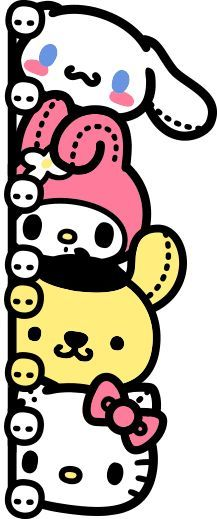
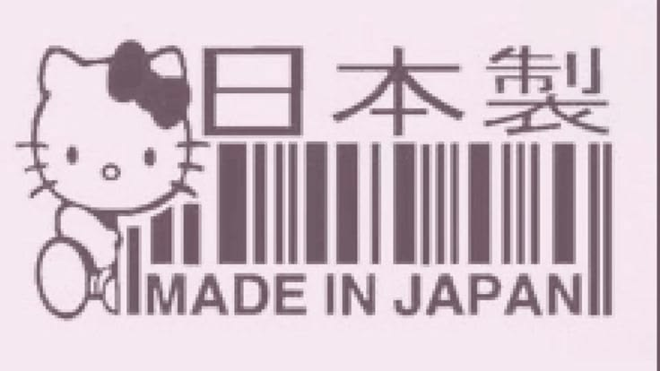
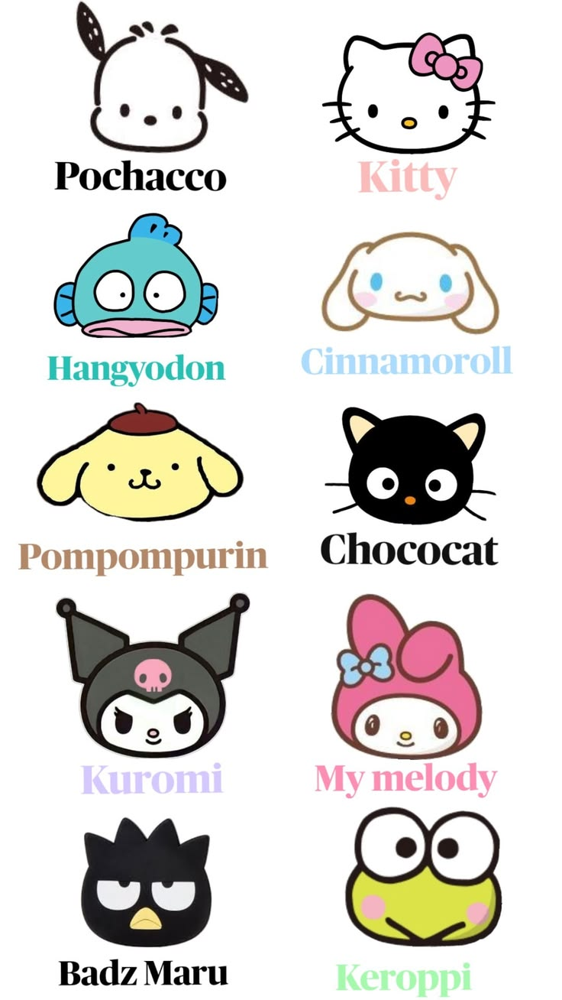

class: middle # Mijn passie voor Sanrio Van Hello Kitty tot de verschillende Sanrio characters <p></p> --- # Wat is Sanrio? Sanrio is een Japans bedrijf dat bekendstaat om zijn schattige characters. Het bekendste character is Hello Kitty, maar Sanrio heeft nog veel meer characters. Ieder character heeft een eigen uiterlijk, persoonlijkheid en stijl. Hierdoor spreekt Sanrio veel verschillende mensen aan. <p></p> --- # Waarom heb ik Sanrio gekozen? Ik ben al sinds ik klein was fan van Hello Kitty. Vroeger vond ik vooral de schattige uitstraling leuk, maar nu let ik ook meer op de verschillende kleuren, ontwerpen en stijlen. Daarom leek het mij leuk om Sanrio als onderwerp voor mijn Digital Garden te kiezen. --- # Hello Kitty Hello Kitty is mijn favoriete Sanrio character en ook het character waarmee mijn interesse in Sanrio begon. Ze is herkenbaar aan haar witte gezicht, rode strik en eenvoudige uiterlijk. Wat ik leuk vind aan Hello Kitty, is dat ze in veel verschillende stijlen voorkomt, maar toch altijd herkenbaar blijft. --- # Andere Sanrio characters <table style="width:100%; border:0; margin-top:20px;"> <tr> <td style="width:55%; vertical-align:top; border:0;"> <p>Naast Hello Kitty zijn er nog veel andere characters die ik leuk vind.</p> <p>Bijvoorbeeld:</p> <ul> <li>My Melody</li> <li>Kuromi</li> <li>Cinnamoroll</li> <li>Pompompurin</li> <li>Pochacco</li> </ul> <p>Ieder character heeft een eigen uitstraling.</p> </td> <td style="width:45%; vertical-align:top; border:0; text-align:center;"> <p></p> </td> </tr> </table> --- # My Melody en Kuromi My Melody en Kuromi zijn twee characters die erg van elkaar verschillen. My Melody heeft vooral een zachte en lieve uitstraling, met veel roze en lichte kleuren. Kuromi heeft juist een stoerdere uitstraling, met zwart, paars en roze. Ik vind het leuk hoe Sanrio verschillende stijlen combineert. --- # Wat maakt Sanrio herkenbaar? Wat mij vooral opvalt aan Sanrio zijn de zachte kleuren, ronde vormen en eenvoudige gezichtsuitdrukkingen. Veel characters hebben kleine details, zoals een strik, muts of andere accessoires. Ondanks dat de ontwerpen vaak simpel zijn, kun je de characters meteen herkennen. --- # Kleuren en vormgeving Sanrio gebruikt veel pastelkleuren, zoals lichtroze, lichtblauw, geel en paars. Deze kleuren geven de characters een zachte en vrolijke uitstraling. Ik vind vooral de combinatie van kleuren en eenvoudige vormen mooi. Dit wil ik ook terug laten komen in mijn eigen Digital Garden. --- # Sanrio in het dagelijks leven Sanrio komt niet alleen voor in illustraties en animaties. Je ziet de characters ook terug op kleding, knuffels, tassen, schoolspullen en kameraccessoires. Ik vind het leuk dat dezelfde characters op zoveel verschillende manieren worden gebruikt. --- # Waar haal ik inspiratie vandaan? Voor mijn onderwerp zoek ik vooral inspiratie op Pinterest, TikTok en Instagram. Hier zie ik verschillende illustraties, producten en ontwerpen van Sanrio. Ik let vooral op hoe kleuren worden gecombineerd en hoe de characters in verschillende stijlen worden afgebeeld. --- # Mijn ideeën voor de Digital Garden Voor mijn Digital Garden wil ik een website maken die past bij de sfeer van Sanrio. Ik wil gebruikmaken van zachte kleuren, afgeronde vormen en afbeeldingen van verschillende characters. Ook wil ik laten zien welke characters ik leuk vind en waarom. Mijn doel is om een vrolijke, persoonlijke en overzichtelijke website te maken. --- class: center, middle # Conclusie Sanrio is voor mij een onderwerp waar ik al sinds mijn kindertijd interesse in heb. Wat begon met Hello Kitty, is uitgegroeid tot interesse in verschillende characters en hun ontwerpen. Daarom wil ik deze inspiratie gebruiken voor mijn eigen Digital Garden. **Bedankt voor het luisteren!**